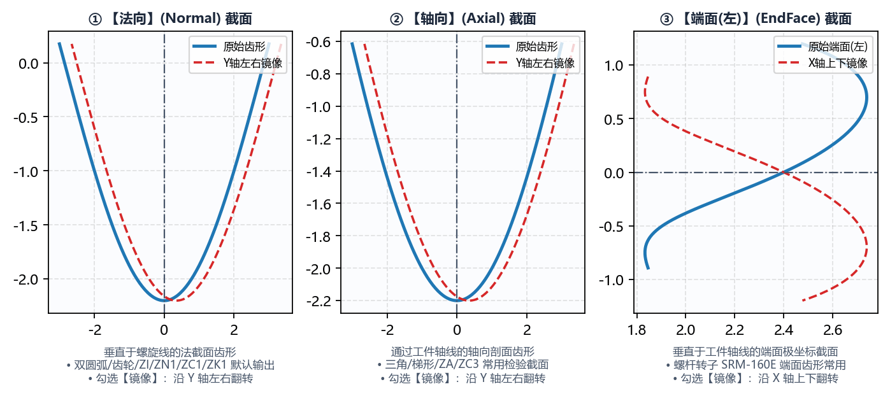

2.2 DXF 齿型文件导入、齿形类型与镜像
在定义好工件螺旋参数后，下一步是通过 DXF 齿型文件 导入目标工件的标准齿槽（或齿体）截面曲线，并正确声明该曲线所属的空间截面类型（DXF 齿形类型）。
一、DXF 齿型文件 导入规范与坐标系约定
点击 DXF 齿型文件 右侧的 选择文件 按钮，选择目标 .dxf 文件后，软件会自动解析其中的几何图元（支持 LINE 直线、ARC 圆弧、SPLINE 样条曲线、LWPOLYLINE 多段线），并在右侧画布的 加载图形 视图中绘出原始齿形曲线。
1. 标准 DXF 齿形局部坐标系约定
为使空间螺旋面包络计算准确对应到工件直径方向与轴向，导入的 DXF 齿形须遵循以下坐标系标准（由软件内置 绘图工具 生成的所有 DXF 文件均已自动严格遵循此标准）：
- 水平轴（ 轴）：代表齿槽宽度方向，推荐以齿槽中心对称线为 ；
- 垂直轴（ 轴）：代表工件径向高度方向，必须以
工件中径() 所在位置作为 基准线！- 对于
内螺纹：齿底（大径处）位于 （或按法向修整反转后位于底部），软件内部会根据工件类型自动对齐径向朝向； - 对于
外螺纹：分度圆/中径位于 ，齿顶位于 ，齿根位于 。
- 对于
- 曲线连续性要求：DXF 中应仅包含单条连续的完整齿槽（或单齿）有效轮廓线，切勿保留图框、中心点画线、尺寸标注文字或多余的封闭辅助框，否则会导致离散化排序异常。
2. 伴随文件 *-info.txt 的智能识别与参数自动回填
当您使用软件内置的 绘图工具（无论是 螺纹、齿轮 还是 蜗杆）点击 生成齿形文件 保存 xxx.dxf 时，软件会在同一文件夹下自动生成同名的 xxx-info.txt 伴随说明文件。
- 当您在
基本参数中点击选择文件加载xxx.dxf时，若系统检测到同目录下存在xxx-info.txt，将自动读取其中的几何元数据并回填至主界面：- 自动将
工件中径与导程回填至基本参数对应输入框，并触发螺旋升角实时重算； - 若在
高级参数 -> 程序信息中将程序头加载齿形信息设为是，软件还会自动将xxx-info.txt中的完整参数明细（如模数、压力角、变位系数、钢球直径、接触角等）格式化为 G 代码注释写入最终输出的宏程序头部！
- 自动将
二、DXF 齿形类型（法向 / 轴向 / 端面(左)）与 镜像
不同的产品图纸或上游设计软件给出的 DXF 齿形截面定义方式不同。请务必根据 DXF 文件的真实几何来源正确选择 DXF 齿形类型：

DXF 齿形类型 选项 |
空间截面几何定义 | 典型应用场景与软件来源 |
|---|---|---|
法向（默认） |
垂直于工件中径处螺旋线切线方向的法向截面（Normal Section, N-N） | 1. 由本软件 绘图工具 -> 螺纹（三角 / 梯形 / 双圆弧）生成的全部标准齿形；2. 法向直廓蜗杆（ ZN1）、渐开线螺旋齿轮的法向基准齿形。 |
轴向 |
包含工件回转轴线 的轴向纵截面（Axial Section, A-A） | 1. 机械制图中直接在轴向剖视图上标注的梯形丝杠、阿基米德蜗杆（ZA）或轴向圆弧蜗杆（ZC3）图纸；2. 轮廓仪沿工件轴向直接扫描测得的截面 DXF。 |
端面(左) |
垂直于工件回转轴线的端面横截面（Transverse Section, T-T） | 1. 双螺杆压缩机阴阳转子（如 SRM-300F、SRM-301M、SRM-160E），行业通用以端面型线（端面离散点或端面 DXF）作为设计基准；2. 由本软件 绘图工具 -> 齿轮 和 绘图工具 -> 蜗杆 输出的端面标准齿形 DXF。 |
切勿选错齿形类型：在大导程或大螺旋角工况下，
法向、轴向与端面(左)截面的齿槽宽度和曲率相差极大（轴向齿宽约为法向齿宽的 ，端面齿宽约为法向齿宽的 ）。若将端面转子 DXF 误选为法向，计算出的砂轮廓形将严重失真！
镜像 复选框的使用时机
在 DXF 齿形类型 下拉框右侧配有一个 镜像 复选框：
- 几何作用：勾选
镜像后，软件在导入 DXF 齿形的第一步即以 （Y 轴）为对称轴，对原始齿形执行水平翻转 ，并同步反转曲线点集顺序。 - 何时需要勾选
镜像：- 不对称齿形的旋向或装夹方向适配：在双螺杆压缩机阴阳转子（如
SRM-300F阴转子与SRM-301M阳转子）或单向受载非对称锯齿螺纹磨削中，当设计端面图定义为左视图而机床装夹方向或螺旋旋向与之相反时，通过勾选镜像即可将迎刃面与背刃面对调； - 快速检验：勾选或取消勾选
镜像后，点击生成代码并查看右下角加载图形视图，即可直观确认翻转后的左右齿侧是否与机床砂轮修整方向一致。
- 不对称齿形的旋向或装夹方向适配：在双螺杆压缩机阴阳转子（如